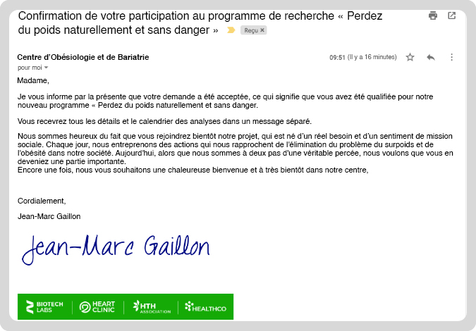
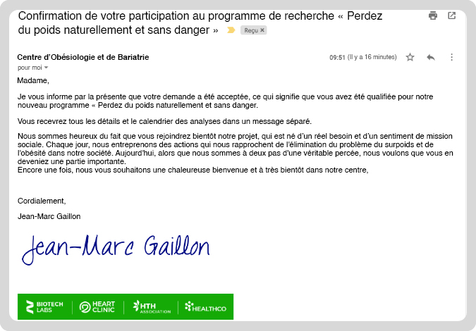
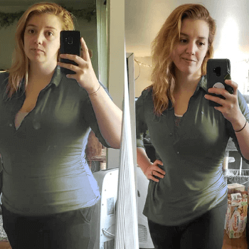
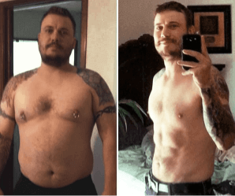

Il y a encore un mois, elle ne supportait pas de voir son reflet dans le miroir. Aujourd’hui, elle pèse 26 kg en moins et elle met un maillot de bain sans aucune gêne
Il y en encore 2 mois, la vie de Julie de Marseille, âgée de 41 ans, était un cauchemar. Elle a été licenciée de son travail et son mari l’a quittée. Son surpoids de plus de 25 kilos lui donnait beaucoup de fil à retordre: elle avait du mal à se déplacer, elle était tout le temps essoufflée et avait des troubles du sommeil. Elle avait honte de son propre corps. Lorsqu’elle a eu la chance de pouvoir participer à des tests innovants, sa vie a changé de façon spectaculaire. Son surpoids a disparu et elle se sent à nouveau séduisante et féminine.
Des années d’humiliations et de ridicule
La conversation avec Julie n’est pas des plus faciles. Elle-même n’est pas très encline à parler des expériences de son passé:
J’avais tendance à prendre du poids depuis mon enfance. À l’école, on me traitait de «tonneau» et on me montrait du doigt. Je n’avais pas d’amis parce que tout le monde avait honte de se montrer en public avec moi. Quand j’ai grandi, je me regardais dans le miroir avec horreur. Je détestais mes cuisses qui se frottaient l’une contre l’autre, et surtout les bourrelets de graisse qui se déversaient de mon pantalon et de mes pulls. À l’université, j’avais l’impression qu’on me fixait sans arrêt et qu’on parlait de mon poids derrière mon dos. D’ailleurs, j’ai plus d’une fois entendu par hasard: «Eh, la grosse arrive!» Au restaurant, la même chose: «Si grosse, et elle continue de manger!»

Tout cela me déprimait beaucoup. Mon corps refusait de plus en plus souvent de coopérer. J’ai fini par avoir de graves problèmes de dos et je ne pouvais plus travailler normalement. Malheureusement, je travaillais à l’ordinateur la plus grande partie de la journée – j’étais comptable. Finalement, mon patron m’a licencié parce que je n’étais plus efficace.
Mon mari me répétait que tout allait s’arranger. Il m’assurait chaque jour de son amour, mais je voyais la répulsion dans son regard. Je voyais comment il regardait mon gros derrière et mes deux jambons à la place des jambes. Ici aussi, tout s’est effondré parce qu’un beau jour… il m’a quittée. Je savais parfaitement que c’était à cause de moi et de mon surpoids croissant. J’ai remarqué depuis longtemps qu’il s’éloignait de moi. J’étais très malheureuse.
«L’effet yo-yo? Je l’avais à chaque fois»
Julie s’est maintes fois remise d’une défaite douloureuse pour encore une fois se battre pour sa santé et son bonheur. Malheureusement sans résultat.

13 kg 4 mois plus tard + 27 kg
Est-ce que j’ai essayé de perdre du poids? Un nombre incalculable de fois. Je me souviens du régime 1000 calories, des jeûnes, ou alors je ne mangeais que des carottes à longueur de journée. Au final, je me faisais du tort avec ces pseudo-régimes. Aujourd’hui je sais que, de cette façon, je ruinais ma santé et mon organisme. J’ai aussi eu un entraineur personnel, mais j’ai commencé à me sentir très mal après ces entrainements: je n’avais pas la force de me lever. Je faisais vraiment des efforts, mais toujours, j’insiste – toujours - j’avais cet effet YO-YO maudit. Et s’il était seulement question de reprendre le poids que j’avais perdu… Mais non! Je reprenais bien plus!
«Le jour qui a changé ma vie»
Nous avons demandé à Julie comment ça se fait qu’il y a encore 6 semaines, elle pesait 103 kg, et aujourd’hui nous voyons une femme mince, souriante et absolument sans complexes. Voici sa réponse.
Probablement je ne pourrais toujours pas supporter de voir mon reflet dans le miroir si une pharmacienne que je connaissais ne m’avais pas transmis cette information. Il s’est avéré que le Centre d'Obésiologie et de Bariatrie, où j’ai été diagnostiquée, démarrait des tests cliniques innovants sous la direction de l’expert de renom Jean-Marc Gaillon. J’ai réussi à apprendre que ce sont les premiers tests de ce type pour les personnes en surpoids sévère dans ma région. Alors j'ai pensé: c'est ma chance!
J’ai décidé de présenter ma candidature. J’ai attendu la réponse toute la semaine, et finalement elle est arrivée:
 

Je ne sais pas pourquoi, mais je sentais que cette fois j’allais réussir, que tout serait différent. J’ai entendu beaucoup de bonnes choses sur monsieur Gaillon et sur la nouvelle méthode de lutte contre le surpoids sur laquelle il travaillait. Je voulais vraiment changer ma vie. Perdre du poids pour, avant tout, me sentir bien avec moi-même. Je voulais savoir si je rentrerai dans une taille M et si j’arriverai encore a séduire un homme qui tomberait amoureux de moi.
«Je perdais du poids de jour en jour»
À la question à propos des tests de Jean-Marc Gaillon, Julie ne pouvait pas cacher ses émotions.
Pendant les test, nous avons été divisés en deux groupes: une partie devait utiliser chaque jour cette nouvelle composion, et la deuxième partie, un placébo. Moi, j’étais dans le premier groupe. C’est incroyable, mais déjà après 3-4 jours, j’ai remarqué les premiers changements dans mon corps. J’ai commencé à perdre des centimètres à la taille et aux hanches. La cellulite disparaissait. Je me sentais de plus en plus légère de jour en jour et, ce qui me rendait très heureuse, j’ai arrêté de penser sans arrêt à ce qu’il y avait au frigo. Je ne cache pas que c’était mon plus grand problème. C’est incroyable, mais je n’avais pratiquement pas faim entre les repas principaux! Cela ne m’étais jamais arrivé auparavant. Je me sentais longtemps rassasiée aussi bien après le petit-déjeuner, qu’après le déjeuner et le dîner. Et je perdais du poids rapidement pratiquement sans rien faire!

Au final, en 6 semaines, j’ai perdu… 26 kg! Mon corps était impossible à reconnaitre. Fini d’éviter mon propre reflet dans le miroir. Fini le sentiment de honte devant les autres. Fini de cacher mon corps sous des pulls larges. Je pourrai enfin prendre un bain de soleil en maillot de bain sans aucune gêne – c’est ce que j’ai alors pensé.
Comment cela se fait-il qu’en seulement 6 semaines, Julie a subi une transformation aussi incroyable?
La composition qui a permis à Julie de brûler pratiquement 100% de la graisse excédentaire en si peu de temps s’est révélé reposer sur des extraits de et agissant 24 h sur 24.
Elle remplit une fonction de protection, protège le réservoir contre les dommages mécaniques, l'eau et la poussière.
contient des ingrédients actifs soigneusement sélectionnés et les extraits végétaux.
Elle libère les substances contenues dans le réservoir avec une rapidité programmée pendant une période déterminée.
Elle lie à votre corps dans le but d'administrer les substances à la circulation générale.
Jean-Marc Gaillon, spécialiste international en obésiologie et concepteur de ce cocktail minceur révolutionnaire, explique ses effets:

«L’action du cocktail minceur se concentre sur l’élimination des dépôts résiduels de graisse à l’aide de revêtements de dosage spéciaux. C’est une methode unique parmi les moyens naturels de perte de poids. En 12 heures, des substances qui brûlent la graisse atteignent même les parties du corps les plus difficiles d’accès et les plus tenaces, comme le ventre, les fesses et les cuisses. De plus, en raison de l’effet fort de ces ingrédients sur l'hypothalamus (le centre du cerveau responsable de la sensation de faim et de satiété), nous nous libérons de l'envie de grignoter et nous sommes rassasiés plus longtemps après un repas. À mon avis, c’est une methode de perte de poids absolument révolutionnaire.»
Effets prouvés
Grâce à la consommation du cocktail , la graisse excédentaire accumulée depuis des années dans le corps de Julie a été brûlée pratiquement sans effort. De plus, l’effet YO-YO n’est pas apparu chez elle jusqu’à aujourd’hui, ce qui signifie que les cellules graisseuses ont été décomposées complétement et définitivement.


Les tests cliniques menés par Jean-Marc Gaillon ont prouvé que le cocktail stimule une perte de poids rapide et effective en brûlant la graisse accumulée aussi bien le jour que la nuit. Les substances d'origine végétale hautement concentrées contenues dans le cocktail transforment instantanément le corps en machine à brûler la graisse, tout en contrôlant le centre de la faim et de la satiété et en vous immunisant ainsi contre les tentations alimentaires.
Oubliez les régimes et les interventions risquées – optez pour une perte de poids naturelle avec
Combien de fois vous êtes-vous torturée avec des pseudo-régimes qui n’ont rien donné et qui n'ont fait qu'aggraver votre santé? Combien de fois avez-vous ressenti de la résignation lorsque les kilos sont revenus avec une force doublée après la fin d’un régime? Combien de fois avez-vous pleuré en regardant votre reflet dans le miroir? Il est temps d’en finir et de commencer un tout nouveau chapitre de votre vie. Sans dépenser une fortune, sans risque de complications ou une longue convalescence, comme en cas de liposuccion. C’est votre temps pour tout changer et retrouver à nouveau votre estime de soi.
Spécialement pour nos lecteurs, Jean-Marc Gaillon a préparé une action spéciale de promotion. Elle est disponible pour tous ceux et celles qui décideront de changer leur corps et leur vie avec la formule .
Si vous voulez obtenir des résultats comme ceux de Julie, l’héroïne de cet article, cliquez sur le lien ci-dessous. Il vous redirigera vers le site officiel du fabricant, sur lequel vous recevrez une réduction spéciale. Je vous encourage à le faire assez vite, car le nombre journalier de réductions octroyées est limité.
J’utilise déjà depuis un mois et j’en suis à 17 kg en moins. Ça fait longtemps que je ne me suis pas sentie aussi bien.
Je suis si heureux d’être tombé sur … J’ai déjà tout essayé, mais ça alors: il suffit de coller le patch et la graisse brûle toute seule!
Grâce à ce cocktail, je peux enfin vivre normalement! Je ne me fatigue plus en montant les escaliers et je ne suis plus essoufflée en promenade
Honnêtement, je ne reconnais pas ma femme après avoir utilisé ce cocktail, qu’est ce que vous lui avez fait ;)
@Sylvain montre ta femme!
@Adrien voici voilà. Bien sûr avec l’accord de mon épouse :P
Je ne sais pas comment je pouvais vivre sans ça. Tant de régimes miracles qui n’ont pas fait de miracles, et tant d’argent gaspillé…un désastre
Depuis que j’ai fini de maigrir avec ce cocktail il y a 2 mois, j’ai 19 kilos en moins et pas d’effet yoyo. Je les recommande donc à toutes les femmes
Je fais des études en pharmacie et, chez nous, on parle beaucoup de ce cocktail parce qu’il a vraiment une chouette composition naturelle et une action prouvée. À utiliser sans hésiter
Est-ce que les hommes peuvent aussi le coller?
@Pierre Mon vieux, après 2 mois avec j’ai même des contours de muscles sur le ventre! Ça fait vraiment des miracles!
Maman fait un régime avec ce cocktail je vois qu’elle a diminué de moitié
Je suis passée du XL au M avec ça marche
Wow, chapeau pour la métamorphose de cette dame! Impressionnant!
Dépêchez-vous d'acheter le produit avec une remise de -50%
** Faites attention que les TVA locaux peuvent varier, cela dépend du pays où vous commandez nos produits.